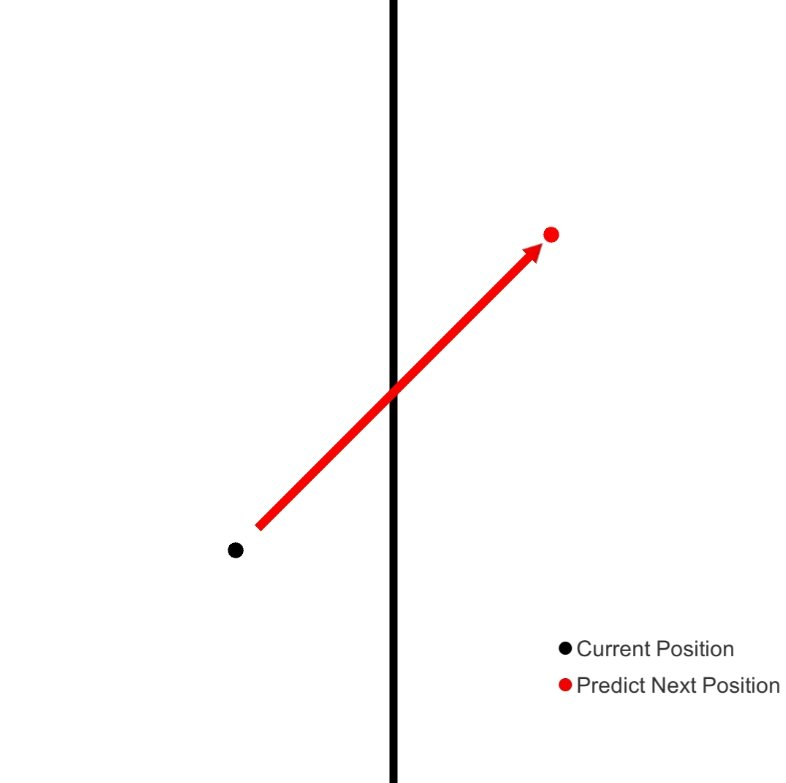
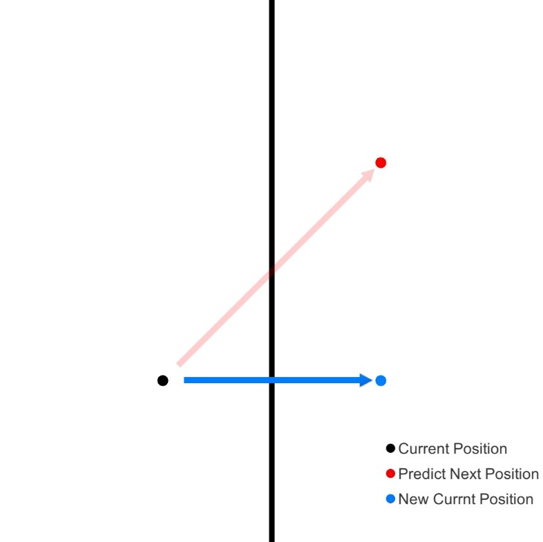
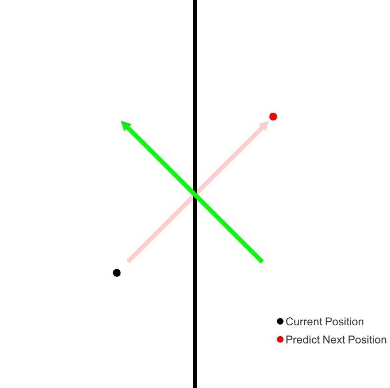
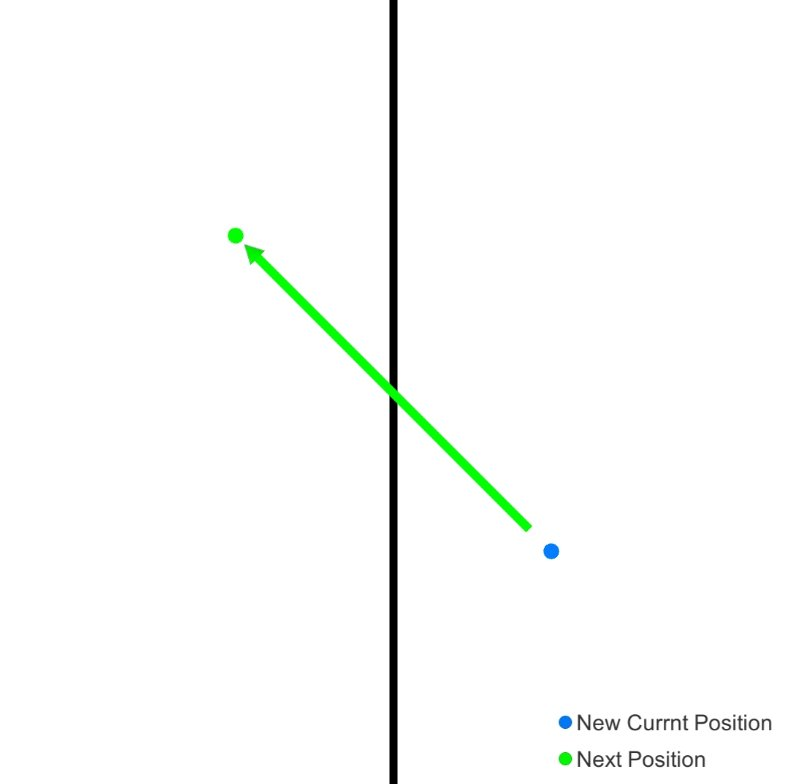
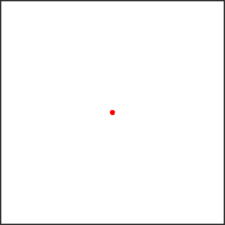
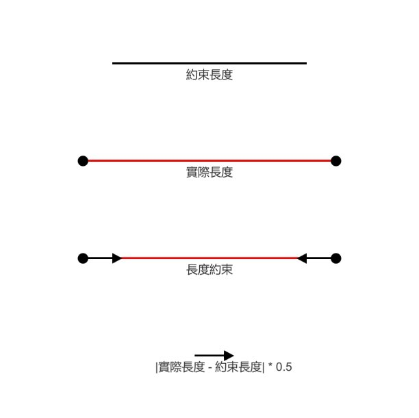
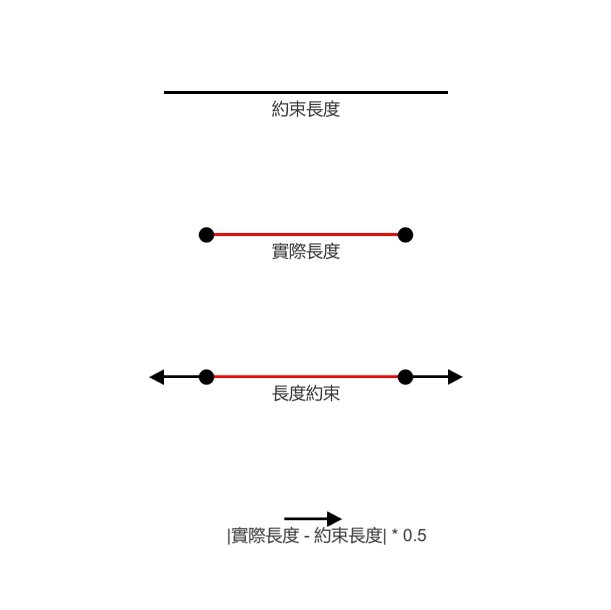
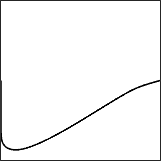
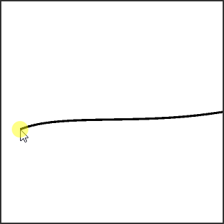
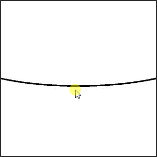

一般而言在實作物體移動時會使用Kinematic Equation 運動方程式
由於運動方程式需要速度
加速度等資訊才能夠有效運算
Verlet Integration 韋爾萊積分法則是另一種運動方程式的解決方案
能夠在不需要速度的前提下
只依靠物體的當前位置、前一幀位置就模擬出結果
在離地五公尺的地方放開一顆球
想要知道這顆球的位置與時間的關係
從高中物理等加速度運動公式可以得知
本質上是運動方程式的一種解決方案
將時間變化量帶入運動方程式 
調整為
![\begin{aligned} \\ x(t) &= x(t) + v(t) + \frac{1}{2}a(t) + \frac{1}{6}b(t) \cdots \\ x(t + \Delta t) &= x(t) + v(t)\Delta t + \frac{1}{2}a(t)\Delta t^{2} + \frac{1}{6}b(t)\Delta t^{3} + O(\Delta t^{4}) &\cdots\left ( 1 \right ) \\ x(t - \Delta t) &= x(t) - v(t)\Delta t + \frac{1}{2}a(t)\Delta t^{2} - \frac{1}{6}b(t)\Delta t^{3} + O(\Delta t^{4}) &\cdots\left ( 2 \right ) \\ \\ x(t + \Delta t) + x(t - \Delta t) &= 2x(t) + a(t)\Delta t^{2} + O(\Delta t^{4}) &\cdots\left ( 1 \right ) + \left ( 2 \right ) \\ x(t + \Delta t) &= 2x(t) -x(t - \Delta t) + a(t)\Delta t^{2} + O(\Delta t^{4}) \\ x(t + \Delta t) &\cong 2x(t) -x(t - \Delta t) + a(t)\Delta t^{2} \end{aligned}](math-004.png)
由此可知
只要知道當前位置 、前一位置 、加速度 、時間變化量
在不需要物體速度的前提下
即可求得物體的下一位置
![\begin{aligned} \\x(t + \Delta t) &= 2x(t) -x(t - \Delta t) + a(t)\Delta t^{2} \\ a(t)\Delta t^{2} &= 10 * 0.1^{2} = 0.1 \\ \\ x_{0} &= 0 \\ x_{1} &= 0.05 \\ x_{2} &= 2x_{1} - x_{0} + a(t)\Delta t^{2} &&= 2 * 0.05 - 0 + 0.1 &&= 0.2 \\ x_{3} &= 2x_{2} - x_{1} + a(t)\Delta t^{2} &&= 2 * 0.2 - 0.05 + 0.1 &&= 0.45 \\ x_{4} &= 2x_{3} - x_{2} + a(t)\Delta t^{2} &&= 2 * 0.45 - 0.2 + 0.1 &&= 0.8 \\ x_{5} &= 2x_{4} - x_{3} + a(t)\Delta t^{2} &&= 2 * 0.8 - 0.45 + 0.1 &&= 1.25 \\ x_{6} &= 2x_{5} - x_{4} + a(t)\Delta t^{2} &&= 2 * 1.25 - 0.8 + 0.1 &&= 1.8 \\ x_{7} &= 2x_{6} - x_{5} + a(t)\Delta t^{2} &&= 2 * 1.8 - 1.25 + 0.1 &&= 2.45 \\ x_{8} &= 2x_{7} - x_{6} + a(t)\Delta t^{2} &&= 2 * 2.45 - 1.8 + 0.1 &&= 3.2 \\ x_{9} &= 2x_{8} - x_{7} + a(t)\Delta t^{2} &&= 2 * 3.2 - 2.45 + 0.1 &&= 4.05 \\ x_{10} &= 2x_{9} - x_{8} + a(t)\Delta t^{2} &&= 2 * 4.05 - 3.2 + 0.1 &&= 5 \end{aligned}](math-009.png)
1. 定義移動點
public struct Dot
{
public Vector3 position;
public Vector3 prevPosition;
public Dot(Vector3 position, float defaultVelocity)
{
this.position = position;
prevPosition = position - Quaternion.Euler(0, 0, Random.Range(0f, 360f)) * Vector3.up * defaultVelocity;
}
}2. 計算 Verlet Integration
//定義加速度為 0
Vector3 newPosition = 2 * position - prevPosition;3. 邊界條件判斷

判斷下一位置是否超過邊界
將移動方向投影至邊界法向量求得新當前座標
以邊界法向量求得新移動方向
下一座標 = 新當前座標 + 新移動方向4. 完成

邊界限制成果展示1 – 等速度版本邊界限制成果展示2 – 加入彈力及重力版本
1. 定義繩索節點
public struct Node
{
public Vector3 position;
public Vector3 prevPosition;
public bool pinned;
public Node(Vector3 position)
{
this.position = position;
prevPosition = position;
pinned = false;
}
}2. 生成繩索節點
3. 計算 Verlet Integration
for(int i = 0; i < m_lastNodeCount; i++)
{
Node node = m_nodes[i];
Vector3 position = node.position;
Vector3 prevPosition = node.prevPosition;
Vector3 newPosition = 2 * position - prevPosition + m_finalGravity;
node.position = newPosition;
node.prevPosition = position;
m_nodes[i] = node;
}4. 繩索位置約束
當繩索兩端為固定點時，用於約束繩索兩端
private void ApplyPinned(TargetData targetData)
{
int index = targetData.index;
Node node = m_nodes[index];
node.pinned = targetData.IsPinned();
if(node.pinned)
{
node.position = targetData.GetPosition();
m_nodePositions[index] = node.position;
}
m_nodes[index] = node;
}5. 繩索長度約束

當相鄰節點距離大於約束長度時，往節點中心方向約束
當相鄰節點距離小於約束長度時，往節點中心反方向約束6. 更新節點位置
7. 完成

繩索模擬成果展示1
繩索模擬成果展示2
繩索模擬成果展示3阿祥的開發日常 is creating game development tutorial | Patreon
Verlet Integration 韋爾萊積分法 – 以邊緣檢測與繩索模擬為例 (完整原始碼)
Math for Game Developers – Verlet Integration
2D Rope Tutorial – Make Swinging Rope in Unity (Verlet Integration)
Create Rope Bridge, String in Unity – Verlet Integration Part 2
Verlet Integration · GitBook
Coding Math: Episode 37 – Verlet Integration Part I
Coding Math: Episode 36 – Verlet Integration Part II
Coding Math: Episode 38 – Verlet Integration Part III
Coding Math: Episode 39 – Verlet Integration Part IV